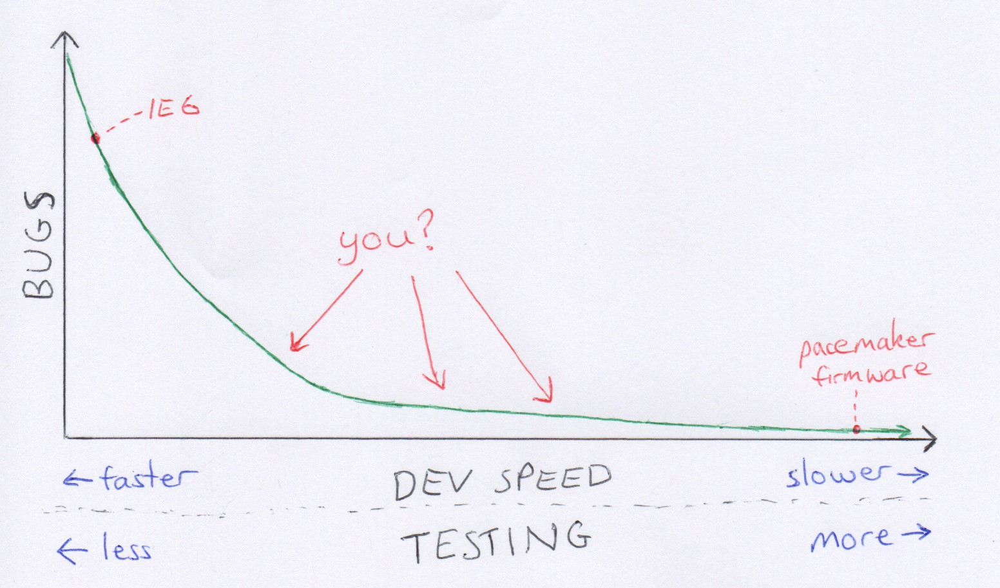

Just a few personal lessons here, recording for my own reference.
Hiring is the most important thing you do as a manager. And every new hire must raise the bar. They must make the whole team better. This is an...
read moreThough most of our engineers are based in Australia, at work we've now got teams in Ukraine, Sri Lanka, India, and Brazil. Here's some tips.
If you wouldn't hire them for full price at on-shore rates, don't hire them off-shore...
read moreWhen broken production apps break, stakeholders immediately ask: “What can we do to ensure this never happens again?”
The relationship between development speed and bugs looks something like this:

Rushed pace & poor testing means many bugs. Slow...
read moreI’ve been bitten more than once by data imports consuming an unreasonable amount of time in software projects. Here are some lessons.
The client (or whoever is sourcing the data) will give you poor quality data from disparate...
read moreCustomers want fixed price. Here’s how to make it a fair deal for yourself. I recently read this tweet-storm, on why you should never take fixed price contracts.
It says:
read moreUnless you’ve done the job 20 times, and can estimate how long it will take...
Unexpected circumstances have meant I've done two job hunts in recent months. I usually scribble down a handful of questions to ask or consider prior to each interview. Here they are so I can remember and refine them over time.
What does the...
After Ruby Conf AU, I came away noticing a few common traits of good talks:
On stage, you’re not just speaking, you’re performing. Turn the enthusiasm up a few notches from what you’d use in a face-to-face conversation. Don’t just...
read moreA list of my pet hates - particularly re: management, so I can make sure not to do them should I ever be in that position.
People who prefix every task they delegate with words like 'simple', 'quick' and 'easy'. They rarely are, and it makes...
In year 10, my art teacher stopped me.
Stop! You're a perfectionist! And perfectionism is a disease!
Having been praised for my perfectionism all my life, I dismissed her advice. It took more than a decade for me to realise just how right she...
read moreI took my own advice at Ruby Conf and introduced myself to several of the better known speakers. One thing I asked each was: what is the common trait between yourself and others who are 'famous within the community'?
Interestingly, none thought it...
read more| Page 1 of 6 | Next